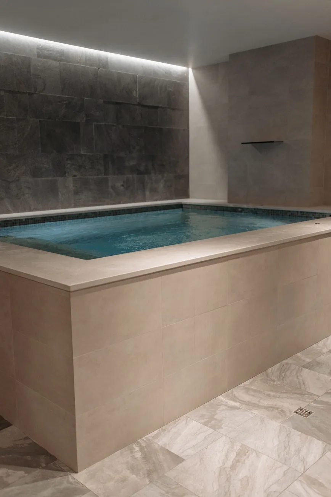
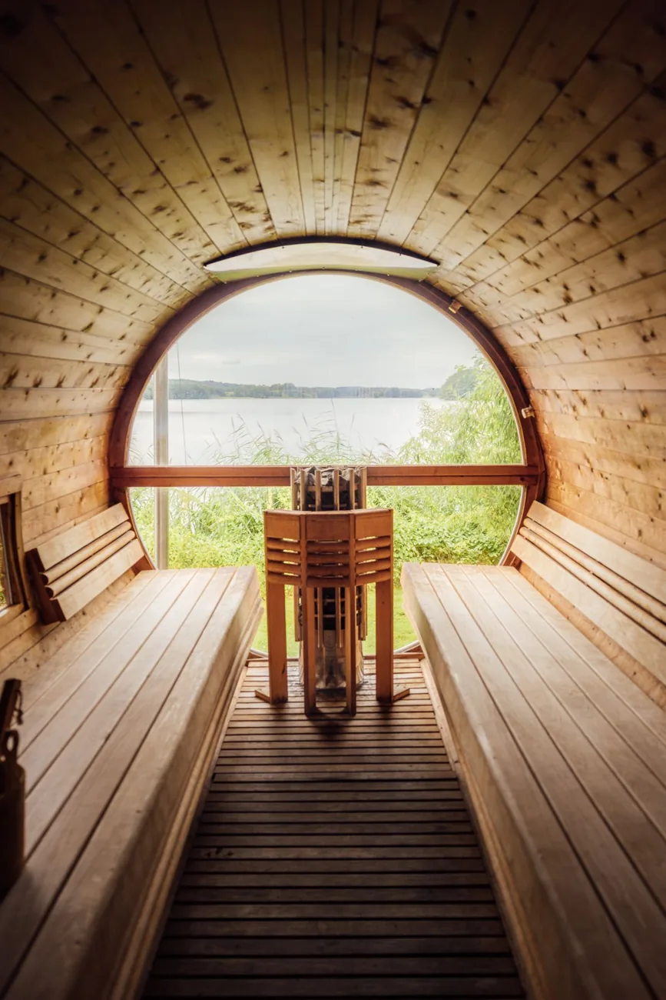
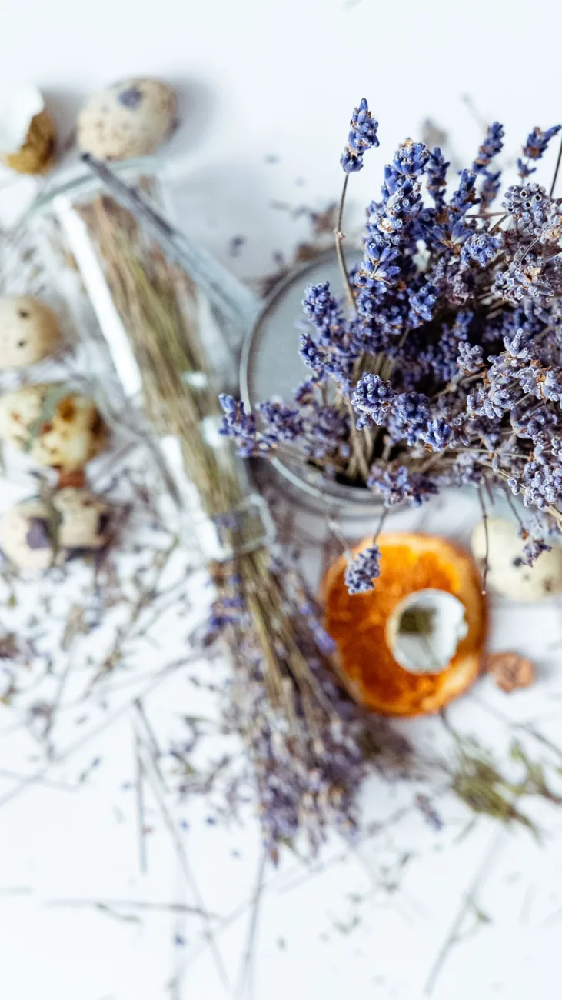
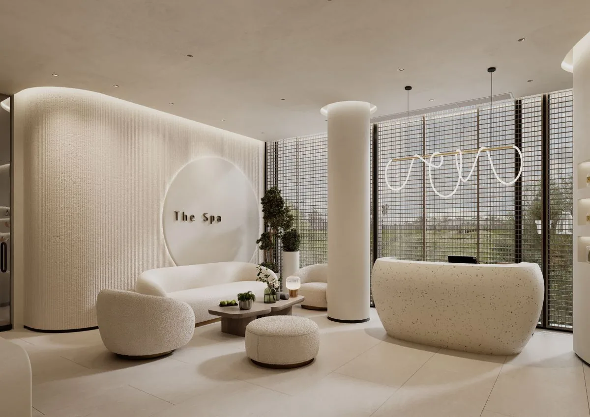
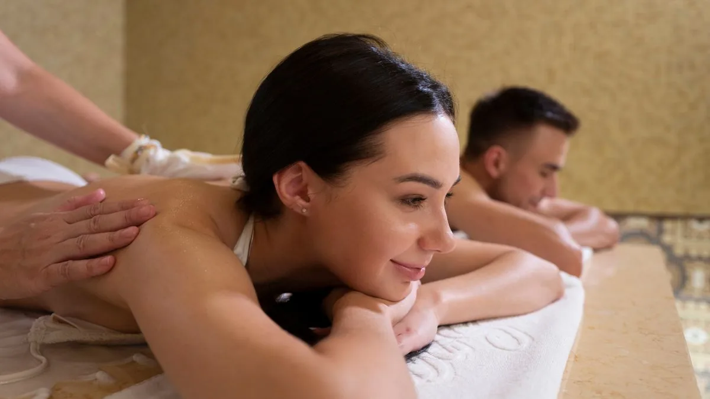
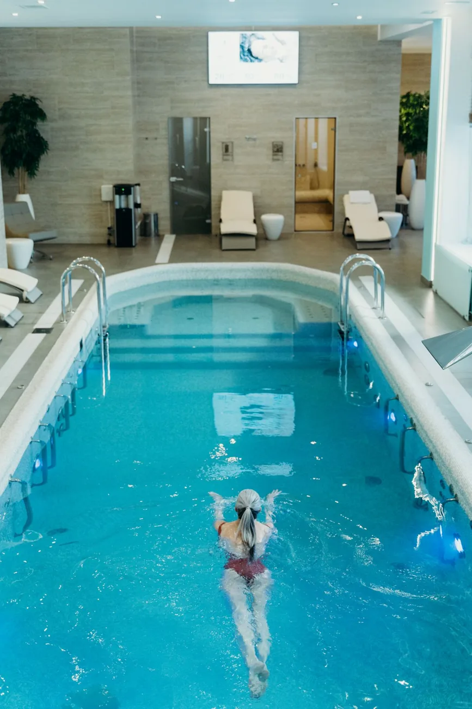

Klasik İsveç Masajı
Kas gerginliğini gideren, kan dolaşımını artıran rahatlatıcı masaj. Aromaterapi yağları ile uygulanır.
Nasıl hissetmek istediğinizden ilham alan, özenle seçilmiş bir deneyim koleksiyonu.
Tüm ritüelleri keşfedinKas gerginliğini gideren, kan dolaşımını artıran rahatlatıcı masaj. Aromaterapi yağları ile uygulanır.
Kronik kas ağrıları ve spazm için profesyonel derin doku tekniği.
Geleneksel kese ve köpük masajı ile derin temizlik. Cildiniz ipek gibi olacak.
24 ayar altın özlü maske ile cilt tonu eşitlemesi ve anti-aging etkisi.
Ayak basınç noktalarından vücudun denge merkezini uyarma tekniği.
Finlandiya tipi kuru sauna + Türk buhar odası kombinasyonu.

İyi yaşamın, kendinize ayırdığınız sakin bir anla başladığına inanıyoruz. Doğal dokular, suyun dinginliği ve özenle tasarlanan ritüellerle günlük yaşamın temposuna zarif bir mola sunuyoruz.
Uzman ekibimiz, her misafirin tercihlerini dinleyerek deneyimini kişiselleştirir. Geleneksel spa kültürünü çağdaş bakım anlayışıyla bir araya getirir; her adımda konforunuzu ve özeni ön planda tutar.
Bakımı, dengeyi ve farkındalığı günlük hayatınıza taşımak için bir tutam ilham.
Günlüğü keşfedinTemsili misafir deneyimleri. Bu örnek anlatımlar, doğrulanmış müşteri yorumları değildir.
Doğal dokular, yumuşak ışıklar ve özenle düşünülmüş detaylar. Spa dünyasına bir bakış.
Galeriye göz atın Dingin bir dokunuş
Dingin bir dokunuş
Sıcaklık ve doğa Suya ayrılan bir an
Suya ayrılan bir an Çay ve sessizlik
Çay ve sessizlik
Hidroterapi
Özel bir ritüel
Birlikte iyi yaşam
Daha sakin bir ritimÖzenle seçilmiş spa görselleri · görsel bir davet